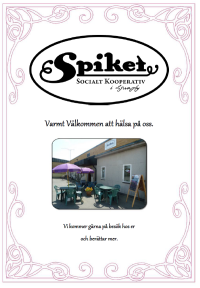

Efter att projektet ”Starta Vårat” som bedrevs av ABF avslutades i december 2007, bildades kooperativet ”Spiket” och efter julledigheten träffades hela gänget i lokalerna på fd Hammarskolan för att planera inför öppnandet.
Vi är en grupp människor som på något sätt står utanför den ordinarie arbetsmarknaden och som bestämt oss för att vi vill göra någonting tillsammans.
När vi öppnade hade vi café verksamhet och loppis. Idag har vi utökat verksamheten och jobbar nu med café, catering, hantverk, sömnad och lego arbete.
Vår målsättning är att alla som jobbar hos oss ska ha en så meningsfull sysselsättning som möjligt och få chans att stärka sin självkänsla. Man ska kunna arbeta här utifrån sina egna förutsättningar.
Tillsammans blir vi starka.
Vår informationsbroschyr kan du ladda hem här:
